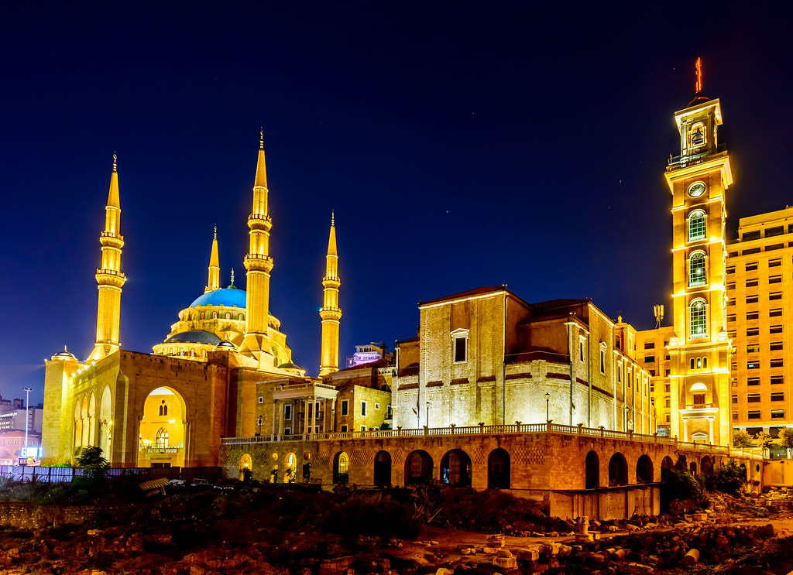
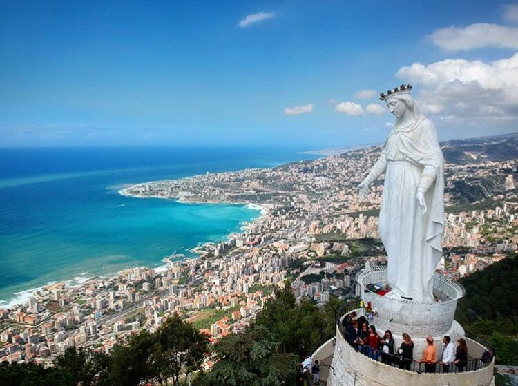

Le liban pays des cèdres se caractérise par son histoire sa culture et ses paysages. cela a conféré à son patrimoine une richesse importante. Ce dernier est le reflet des civilisations les plus puissantes qui se sont succédées et qui ont laissé leur empreinte dans la mémoire collective du peuple. Sur la liste du patrimoine mondial de l'Unesco, notre pays a cinq sites inscrits Tyr, Byblos, Baalbeck et Anjar sont quatre sites culturels, et la montagne des Cèdres avec la vallée sainte de la Qadisha représentent un paysage culturel.l'Etat libanais reconnait 18 communautés religieuses sur son territoire. Les communautés chrétiennes maronite, grec-orthodoxe, grec-catholique (ou melkite), arménienne apostolique, arménienne catholique, syrienne-orthodoxe, syrienne-catholique, assyrienne, chaldéenne, copte orthodoxe, latine et protestante.Les communautés musulmanes chiite, sunnite, druze, ismaélienne et alaouite. La communauté juive est également reconnue, mais le nombre de ses membres ne dépasse pas la centaine.
Mosquée populaire de beyrouth. Elle est a proximité de la place des Martyrs, tout près de la cathédrale Saint-Georges-des-Maronites
Le sanctuaire notre dame du liban est un édifice religieux catholique de l'Église maronite, et un lieu de pèlerinage dédié à la Vierge Marie en tant que patronne et protectrice du Liban.
